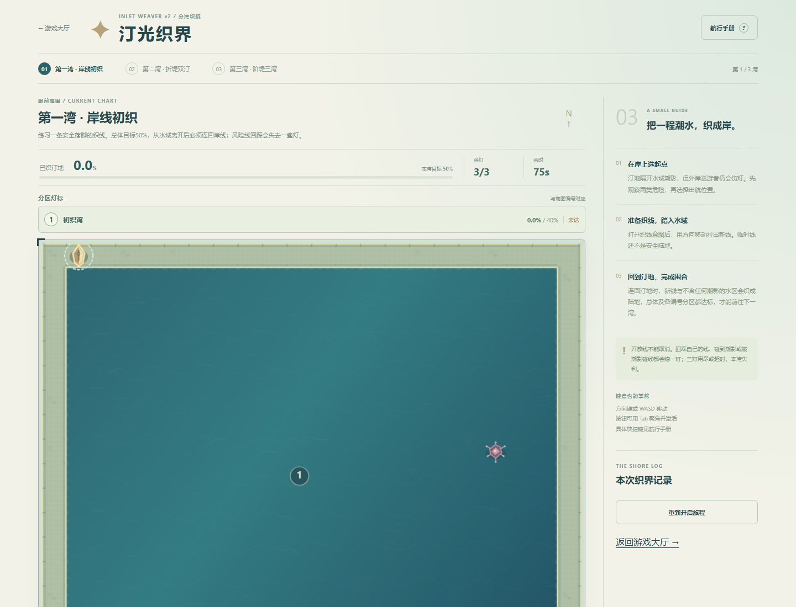
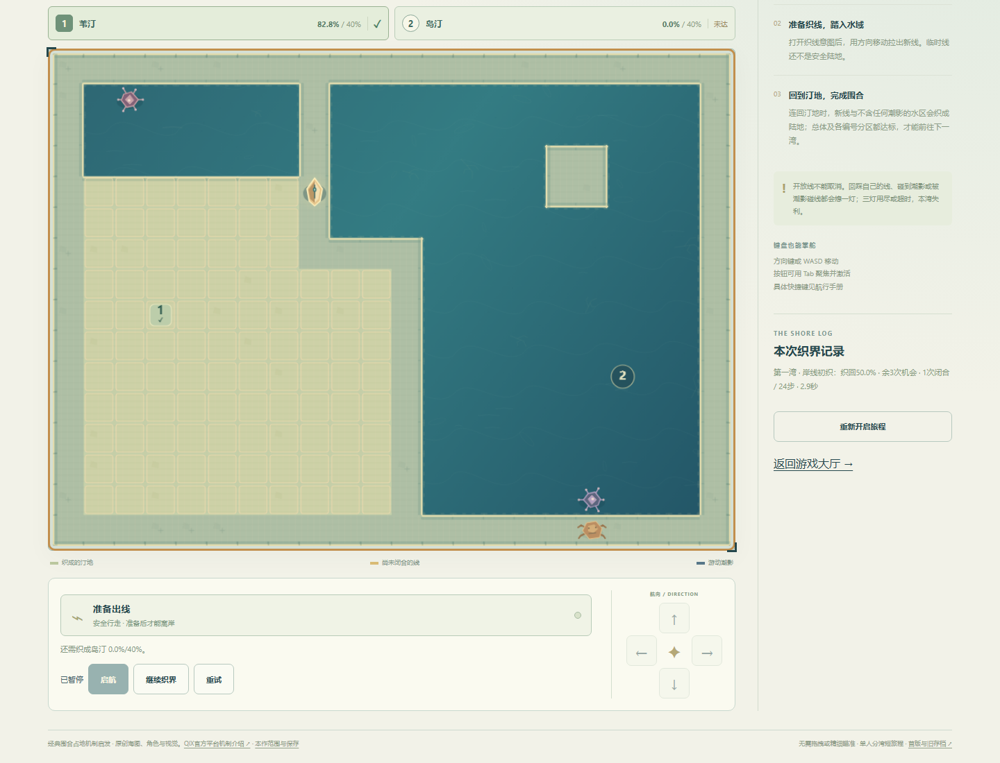
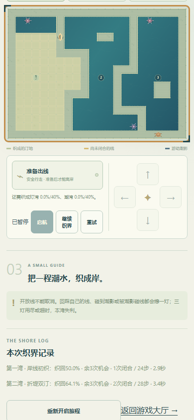
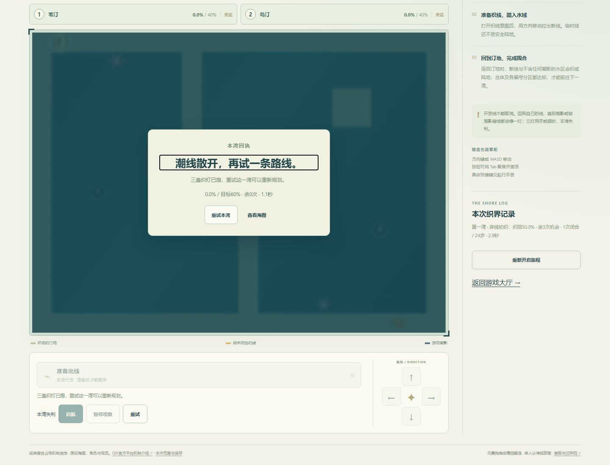
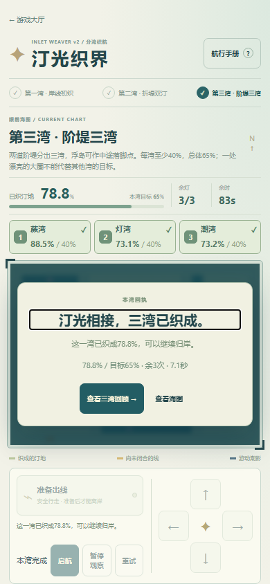
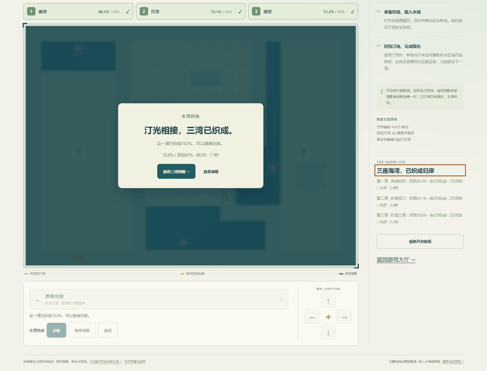
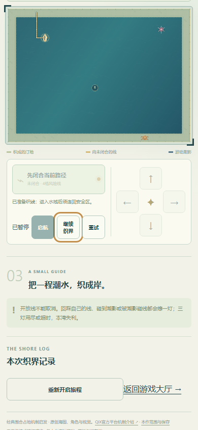

首版进阶图潮影集中一侧，单条长直线即可填走大片水域；浮岛非必要。v2保留50/60/65%总目标、三灯和全部步速，加入第二湾两区、第三湾三区各40%的固定初始水域目标。安全阶堤使风险线触堤立即闭合，不能单刀贯穿多个区域；每区有潮影，没有未切即免费填区。未设置强制刀数、等待或用提速拉难度。
本轮质量标准：进阶图初始直切不能通关；整行/整列自动重备仍不能扫过全部目标；存在混合路线与不同合法替代解；每次闭合会改变可用岸线或分区进度，UI说明下一处尚未完成的目标。该标准检查内容结构，不宣称已证明乐趣。
Windows / Chromium147，本地实际页面，方向键和空格输入；只读策略建议，无位置、时间、胜负或存档注入。普通暂停用于截图观察，不改变游戏计时。局内时间仅说明路线长度。
| 湾 | 闭合 | 实际步数 | 局内时间 | 织地 |
|---|---|---|---|---|
| 1 | 1 | 24 | 2.88s | 50.00% |
| 2 | 2 | 28 | 3.4s | 64.09% |
| 3 | 3 | 59 | 7.08s | 78.81% |
入门湾：先沿岸选x10出发，完成一次纵向围合。第二湾：先从左岸y4处理苇汀（82.8%），移到阶堤(11,6)，从另一处起点横织岛汀（47.4%）；第一次闭合后另一目标仍0%。替代路线先纵织苇汀，模型为2刀58步6.96秒。第三湾：先左侧横切，再换到上岸纵织潮湾，最后从下侧阶堤横织灯湾；替代利用另一段浮岛，模型4刀65步7.80秒。第三湾主路线3刀59步7.08秒。两套策略均不是真人手感验收。
剩余限制：第二湾熟练主路线仍只约3.4秒，短小网格的长期深度与无辅助难度没有解决完毕。通关需要不同起点/方向决策，不等于具备成熟耐玩性；不通过等待、故意绕路或更快敌人伪造时长。尚待真人判断风险是否有趣、选择是否足够丰富。
模型10次胜利，第二三湾各两套路线且50/100ms输入间隔可解；2种自然失利。262种初始安全格轴向入口均0胜，单刀最多改变1区；68条整行/列自动重备策略与4条首版策略均未赢。上述是明确模型位置夹具，不是普通UI实玩。合法闭合、自交、碰撞、多敌分区、目标派生校验、暂停和恢复边界另有测试。
普通UI第二湾回踩三灯失利→刷新保留→确认当前湾重试，第一湾航记保留。真实开放线刷新先暂停、关间/实际完成态刷新通过；实际完成档保留，重读不重复结算。原v1真实完成档可再打开，v1字节不变且v2字节也不被旧页面改写。新旅程须确认，只重置v2。浏览器配额写失败保留旧有效字节、恢复成功、坏档保全是独立故障夹具，不冒充现实设备故障。
桌面/390CSS布局、键盘、原生touch事件模拟的方向按住/取消/多指释放/暂停/织线与返回短验通过。无横溢出；模拟手机非真机。本作无音频，未验真人乐趣、审美、真实触控性能或所有可能策略。目录仍44项，原72图鉴、其他43项及四个停止项目保持。
真实逐刀UI数据 · 聚合模型与替代路线 · 触控与v1/v2入口短验 · 存储故障夹具 · 旅程存储7组 · 规则和存档说明






